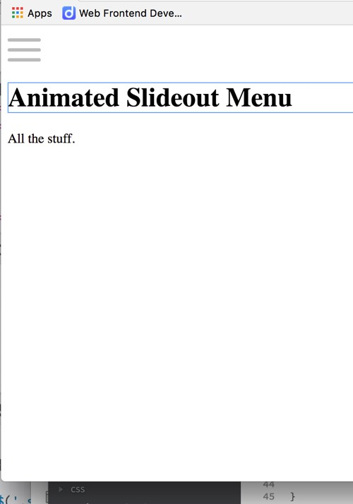
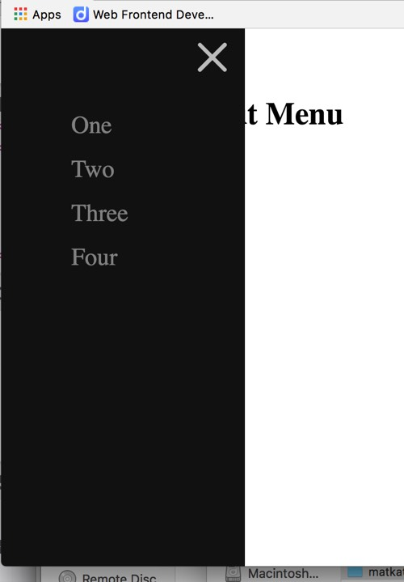
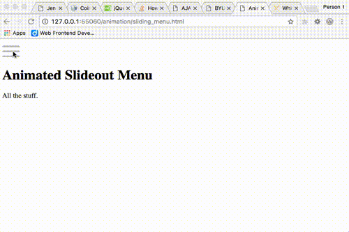

We've looked at some good examples and information about
transitions, animations, and transforms...now lets put it all
together with something you might actually see in a real website!
The project will be to build an animated sliding menu. As we begin
you should know that I know that there are a lot of examples of this
out there. Avoid the temptation to use those too much. You might
look at one or two to get started...but you will learn the
application of these concepts much much better if you do your own
work. Make a rule of no copy/paste for this
activity. Write every line of css yourself.
Remember the goal here...it's not to just complete
the assignment. Rather it's to learn how to effectively use
animations and transitions on a website. You won't do that if you
just copy and paste someone else's work here.
Activity
You may want to review the
sliding curtain
activity from the animation module as you begin...many of the concepts
applied there apply here as well.
Review the goal
Review the following screenshots.

Sliding menu closed

Sliding menu open

Sliding menu animated
Notice a few things:
The menu when closed should be a simple menu icon made up of 3
horizontal bars. It should change on hover to let the user know
they should click on it.
When open notice that the menu should take up 100% of the
height. It should not just suddenly pop open.
Use a transition.
Notice also on the open menu that the 3 bar menu icon is gone.
In it's place is an X. The menu icon should use
transitions/animations/transforms to change from the 3 bars to
the X.
The links and X should have a hover effect as well.
In my example the menu covers up the content underneath. That is
fine, or you might choose to slide the content over as well so
that it is always visible. Another nice effect would be to apply
a semi transparent background color to the content to let the
user know they really should be focusing on the menu right now.
This is optional.
Create the Menu icon
In a codepen create the menu icon first. To get you started html
markup like this usually works well:
<div class="menu-icon">
<span></span>
</div>
*Remember that with that span and the use of the proper
pseudo-elements you have 3 elements to play with...how convenient!
We need a 3 bar menu! Furthermore each of the bars could be
transformed independent of the others.
Transform Menu icon
Once you have a menu icon built work on transforming it to an X.
Event handling
Last week we learned about a slick hack involving checkboxes to
trigger changes with css. Unfortunately that won't work for us
this week. There are too many things that need to happen to too
many elements. We will have to watch instead for a click on our
menu icon with Javascript.
Don't let that worry you! It's actually pretty easy. We can use
the
onclick attribute to attach a Javascript function
we want to run when the icon is clicked.
The function really just needs to add or remove a class to an
element. Here is an example of what that might look like:
function toggleNav() {
var updateElement = document.getElementById("menu-icon");
//toggle adds a class if it's not there or removes it if it is.
updateElement.classList.toggle("open");
}
That function would grab an element with
id="menu-icon" and then it would check to see if it
had a class open on it. If it finds it, the class
will be removed, if it doesn't find it the class will be added.
All of your CSS to transform the 3 bar menu to an X should be in
that .open class.
You could change more than one element in this same
function...for example converting the bars to an X is just
one of the things we need to happen when the icon is
clicked. We also need to have the menu sidebar slide out. You
could do the same thing...add another line to grab the sidebar
element, then toggle a class on it.
If you used my suggested starting html for the menu icon
above...then added what you needed to watch for a click it would
look something like this:
Once the icon is working correctly add in the sidebar elements and
links...then style them. Once that is done add css and code into
the toggle function to make the sidebar slide in and out with a
transition or animation applied.
Grading
Menu icon created and animated with CSS.
Sidebar menu slides out with animation when menu icon is clicked.